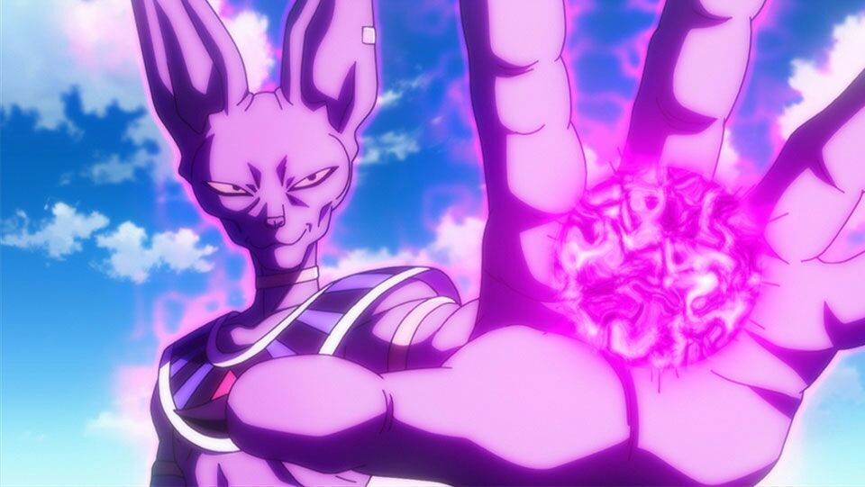
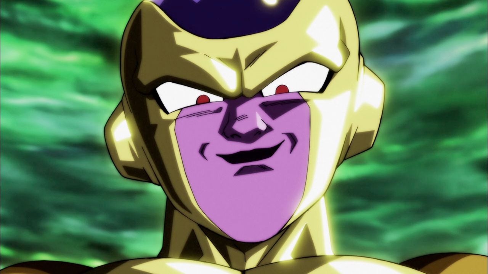
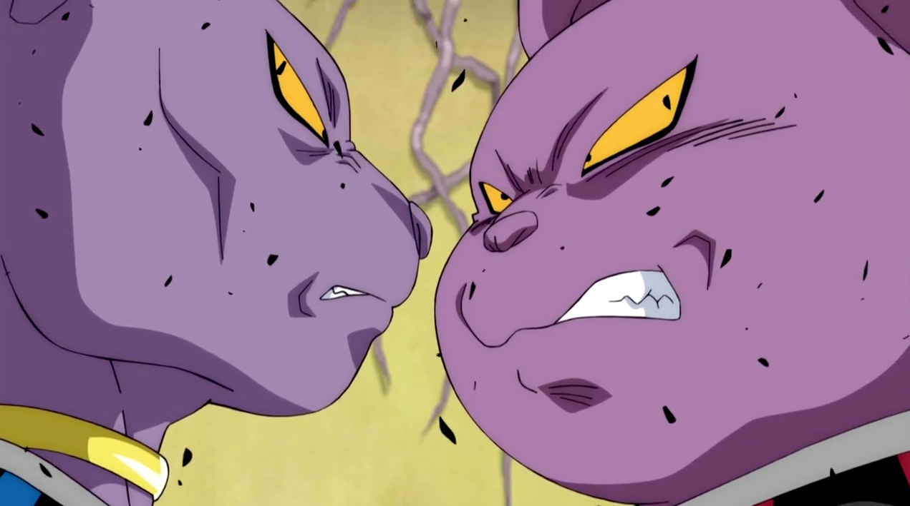
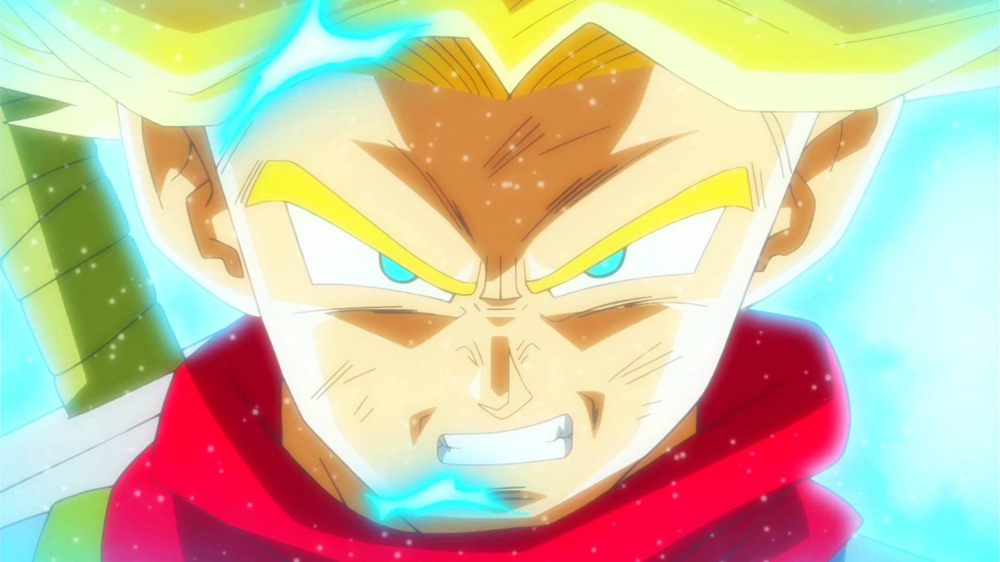
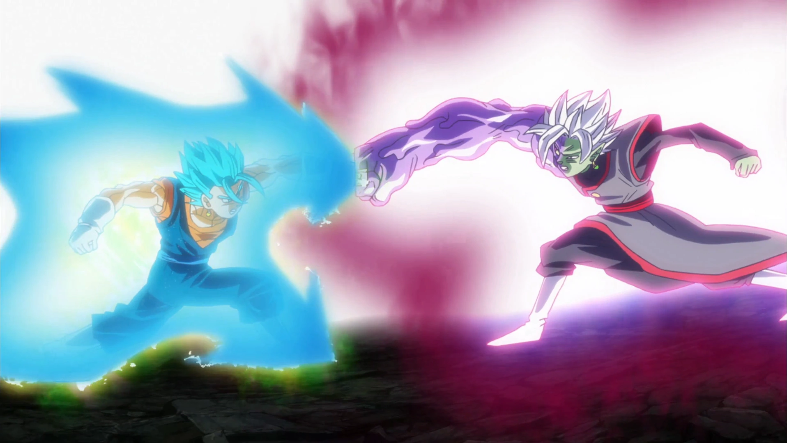
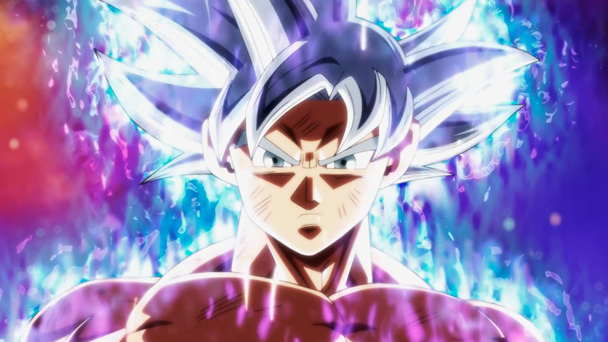

F i l m e s
Dragon Ball Super – Arco do Deus da destruição
Embora Beerus tenha aparecido pela primeira vez em um filme, o personagem foi reapresentado ao público durante o primeiro arco de Dragon Ball Super, que adapta os acontecimentos do longa-metragem animado Batalha dos Deuses. Estes episódios contam uma nova versão de como o Deus da Destruição do Universo 7 conheceu os guerreiros da Terra, enquanto tentava encontrar o Super Saiyajin Deus, um oponente que desejava enfrentar havia muito tempo. Assim como no filme, apesar da hostilidade inevitável no início, os lutadores acabam todos criando um laço com Beerus e Whis -- especialmente Goku e Vegeta, que chegam até mesmo a treinar com o Anjo depois de algum tempo.
Dragon Ball Super – Arco do Freeza Dourado
Freeza é revivido com as esferas do dragão da Terra por seu fiel subordinado a fim de restaurar o medo que seu exército uma vez comandou, mas Freeza tem apenas uma coisa em sua mente, vingança. Depois de treinar por quatro meses, Frieza vai para a Terra com uma nova transformação para enfrentar Goku.
Dragon Ball Super – Arco do Universo 6
Os Deuses da Destruição, Champa e Billss decidiram realizar uma batalha em equipe com cinco poderosos guerreiros de seus respectivos universos, com o grande prêmio sendo a Terra do Universo 7 e toda a comida deliciosa que vem com ela.
Dragon Ball Super – Arco do Trunks do Futuro
O futuro está em perigo mais uma vez, levando a humanidade ao limite absoluto. Trunks do futuro resiste, mas mesmo o poder de um Super Saiyajin não é páreo para este homem misterioso chamado “Black” que se parece exatamente com Goku. Trunks mais uma vez viaja ao passado para contar com a ajuda de Goku e Vegeta.
Goku percebe que a única maneira será se fundir com Vegeta, se tornando Vegetto. Vegetto se transforma em Super Saiyajin Azul, vencendo Zamasu facilmente. Num momento, Zamasu consegue derrubar Vegetto, e quando vai usar sua espada de ki para matá-lo, Vegetto usa sua própria espada de ki para furar Zamasu, demonstrando que ele não é mais imortal. Zamasu fica com muita raiva e, aumentando seus poderes ainda mais, ele fica maior e ainda mais monstruoso.
Dragon Ball Super – Arco do Torneio do Poder
Tendo gostado de assistir o torneio de artes marciais entre o Universo 6 e 7 em primeira mão, o Zeno se empolga e faz um torneio entre todos os 12 universos. Com os guerreiros reunidos, o maior torneio de artes marciais do universo começa valendo a sobrevivência de todos.